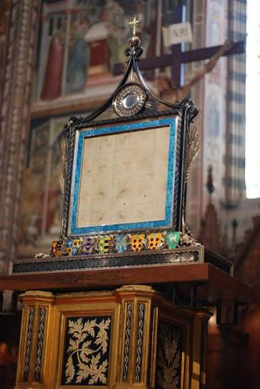
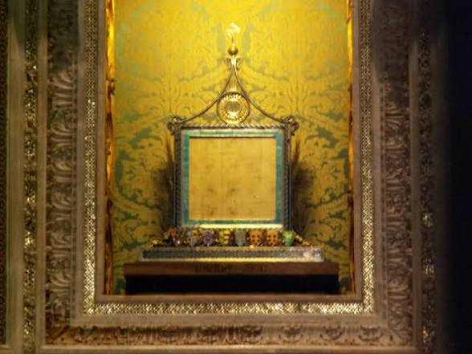
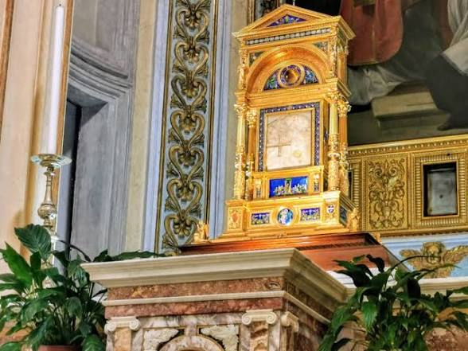

The Eucharistic Miracle of Bolsena occurred in 1263 when a Bohemian priest experiencing doubts about the doctrine of transubstantiation saw a consecrated host begin to bleed during Mass at the tomb of St. Christina. Drops of blood stained his hands, the stone altar, and the linen corporal.
The Corporal: The famous blood-stained linen cloth is housed in a magnificent reliquary inside the Orvieto Cathedral, located roughly 20 miles northeast of Bolsena.
The Altar: In Bolsena, you can visit the exact location where the miracle took place in the grotto chapel of the Basilica of St. Christina, where visible stains remain from the blood.